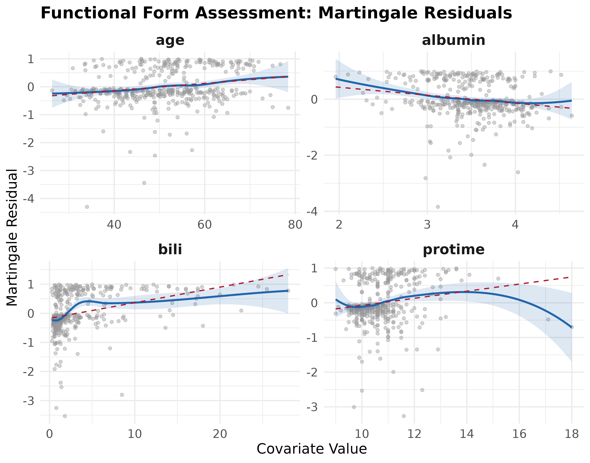

Introduction to survAudit: Auditing Cox Proportional Hazards Models
survAudit-introduction.RmdSurvival Analysis and the Cox Model
When conducting research where the outcome of interest is the time until an event occurs, the most widely used method is the Cox Proportional Hazards (PH) model. For a Cox model’s estimates to be valid, the model must satisfy several structural and mathematical assumptions.
Checking these assumptions usually requires running fragmented tests
from multiple packages. survAudit solves this by
providing:
- A Unified Assumption Classification: Organizing assumptions into Non-Identifiable (purely qualitative), Partially Assessable (combining data and judgment), and Statistically Assessable (testable from data).
- Comprehensive Diagnostics: It aggregates proportional hazards, functional form, influence, outliers, and generalized collinearity (GVIF) into one run.
- Auditable S3 Objects: It returns an object containing all raw diagnostic metrics and lets analysts append qualitative justifications directly to the object before saving it.
Case Study Workflow
In this vignette, we demonstrate how survAudit changes
the analytical workflow of a typical survival analysis by revealing
model limitations that are not apparent from standard Cox regression
output. We use the classic pbc dataset from the
survival package, which records survival data for patients
with primary biliary cholangitis.
1. Fit the Initial Model
A standard approach might begin by fitting a multivariate Cox model
using a mix of continuous covariates (age,
bili, albumin, protime) and a
categorical factor (edema):
library(survival)
library(survAudit)
# Load data and convert endpoint
data(pbc, package = "survival")
pbc$status <- ifelse(pbc$status == 2, 1, 0)
# Fit a naive Cox PH model
fit <- coxph(
Surv(time, status) ~ age + bili + albumin + protime + factor(edema),
data = pbc
)In many applied analyses, reporting may proceed at this stage, with interpretation focused primarily on coefficient estimates and significance tests.
2. Run the Initial Audit
However, survAudit goes beyond asking whether a model is
significant. It systematically answers: What aspects of this model
require attention, and what can be learned from the available data
versus what requires scientific justification?
We run the diagnostic audit using survAudit(). Supplying
data = pbc is highly recommended to ensure complete case
extraction for functional form plots.
audit <- survAudit(fit, data = pbc)
summary(audit)
#> ── survAudit: Detailed Diagnostic Report ────────────────────────
#>
#> Audit time: 2026-06-23 10:15:22
#>
#> ── Data Context ─────────────────────────────────────────────────
#>
#> Sample size: 416
#> Events: 160
#> Censored: 256 (61.5%)
#> Time range: [41.00, 4795.00]
#> Median time: 1730.00
#> Time IQR: [1094.25, 2617.25]
#> Tied event times: 10 (6.2%)
#> Counting process: no
#> Missing data:
#> protime: 2 missing (0.5%)
#>
#> ── Model Information ────────────────────────────────────────────
#>
#> Formula: Surv(time, status) ~ age + bili + albumin + protime + factor(edema)
#> Coefficients: 6
#> Tie method: efron
#> Converged: yes
#>
#> ── Global Goodness-of-Fit ───────────────────────────────────────
#>
#> Cox-Snell residuals computed.
#> (See plot(audit, which = "gof") for the Nelson-Aalen cumulative hazard plot.)
#>
#> ── Proportional Hazards (cox.zph) ───────────────────────────────
#>
#> Transform: km
#>
#> Variable chisq df p
#> ────────────────────────────────────────────────────
#> protime 9.030 1 0.003
#> bili 7.835 1 0.005
#> albumin 1.667 1 0.197
#> factor(edema) 3.121 2 0.210
#> age 0.067 1 0.796
#> GLOBAL 22.248 6 0.001
#>
#> Detected trends:
#> bili: increasing effect over time
#> protime: decreasing effect over time
#>
#> ── Functional Form Assessment ───────────────────────────────────
#>
#> Continuous variables assessed: age, bili, albumin, protime
#>
#> age: no departure detected
#> bili: no departure detected
#> albumin: no departure detected
#> protime: no departure detected
#>
#> ── Influence Diagnostics ────────────────────────────────────────
#>
#> Threshold (2/sqrt(n)): 0.0981
#> Max |dfbetas|: 0.9582 (obs #325, protime)
#> Flagged observations: 69
#>
#> Top 5 most influential observations (by max |dfbetas|):
#>
#> Obs Max |dfbetas|
#> ────────────────────────
#> 325 0.9582
#> 293 0.5832
#> 107 0.5716
#> 63 0.5118
#> 253 0.4390
#>
#> ── Outlier Assessment ───────────────────────────────────────────
#>
#> *Note: Deviance residuals are the most robust symmetric measure for outliers,
#> especially in heavily censored datasets.*
#>
#> Flagged deviance residuals (|resid| > 1.96): 19
#> Flagged log-odds residuals (|resid| > 3.66): 9
#> Flagged normal deviate residuals (|resid| > 1.96): 9
#>
#> Top 5 largest deviance residuals:
#>
#> Obs Deviance Resid
#> ────────────────────────
#> 319 3.2353
#> 87 3.0989
#> 331 2.7288
#> 103 2.5281
#> 350 2.4782
#>
#> ── Event Sufficiency (Events Per Variable - EPV) ────────────────
#>
#> Events: 160
#> Estimated parameters (coefs): 6
#> Events Per Variable (EPV): 26.7
#> Assessment: adequate
#>
#> ── Collinearity Diagnostics (VIF) ───────────────────────────────
#>
#> Threshold: VIF > 5 (or scaled GVIF^(1/(2*Df)) > 2.236 for multi-Df terms)
#>
#> Term GVIF Df GVIF^(1/(2*Df))
#> ────────────────────────────────────────────────────────────
#> age 1.059 1 1.029
#> bili 1.129 1 1.063
#> albumin 1.146 1 1.070
#> protime 1.045 1 1.022
#> factor(edema) 1.273 2 1.062
#>
#> No collinearity issues detected (all thresholds satisfied).
#>
#> ── Assumption Classification ────────────────────────────────────
#>
#> Non-Identifiable:
#> - Independent censoring
#> - Absence of unmeasured confounding
#>
#> Partially Assessable:
#> - functional_form: Assessment of 4 continuous covariate(s) is inherently visual. Use plot(audit, which = 'functional') to inspect martingale residual LOESS smooths for non-linearity.
#> - outlier_impact: Flagged observations: 19 by deviance residuals, 9 by log-odds, 9 by normal deviate.
#> - missing_data: 1 of 5 covariate(s) have missing values (2 total missing entries).
#>
#> Statistically Assessable:
#> - proportional_hazards: Global cox.zph test significant (p = 0.001); 2 of 5 covariate(s) flagged at alpha = 0.05.
#> - influence_stability: Max |dfbetas| = 0.9582 (obs 325, variable 'protime'); 69 observation(s) exceed dfbetas threshold.
#> - Collinearity: No collinearity detected; max VIF/scaled GVIF = 1.15.
#> - event_sufficiency: Events-per-variable ratio = 26.7 (160 events / 6 parameters); classified as 'adequate'.Running survAudit() immediately identifies several
diagnostic findings that indicate areas where the model may require
refinement. For example, the functional form diagnostic detects severe
departures from linearity for both bilirubin and prothrombin time, while
the proportional hazards test flags a global violation.
We can visually explore the functional form violations:
plot(audit, which = "functional")
Furthermore, the audit flags multiple highly influential observations
and outliers. This explicitly prompts the analyst to check the raw data.
Rather than automatically excluding these observations,
survAudit preserves them as diagnostic findings requiring
contextual evaluation.
3. Model Respecification: An Iterative Process
Crucially, the audit provides a transparent roadmap for model respecification. First, we applied clinically plausible logarithmic transformations to bilirubin and prothrombin time to address the detected departures from linearity.
# Fit an updated model with log transformations
fit2 <- coxph(
Surv(time, status) ~ age + log(bili) + albumin + log(protime) + factor(edema),
data = pbc
)
# Re-audit the updated model
audit2 <- survAudit(fit2, data = pbc)
summary(audit2)
#> ── survAudit: Detailed Diagnostic Report ────────────────────────
#>
#> Audit time: 2026-06-23 10:15:23
#>
#> ── Data Context ─────────────────────────────────────────────────
#>
#> Sample size: 416
#> Events: 160
#> Censored: 256 (61.5%)
#> Time range: [41.00, 4795.00]
#> Median time: 1730.00
#> Time IQR: [1094.25, 2617.25]
#> Tied event times: 10 (6.2%)
#> Counting process: no
#> Missing data:
#> protime: 2 missing (0.5%)
#>
#> ── Model Information ────────────────────────────────────────────
#>
#> Formula: Surv(time, status) ~ age + log(bili) + albumin + log(protime) + factor(edema)
#> Coefficients: 6
#> Tie method: efron
#> Converged: yes
#>
#> ── Global Goodness-of-Fit ───────────────────────────────────────
#>
#> Cox-Snell residuals computed.
#> (See plot(audit, which = "gof") for the Nelson-Aalen cumulative hazard plot.)
#>
#> ── Proportional Hazards (cox.zph) ───────────────────────────────
#>
#> Transform: km
#>
#> Variable chisq df p
#> ────────────────────────────────────────────────────
#> log(protime) 8.743 1 0.003
#> factor(edema) 4.084 2 0.130
#> albumin 1.295 1 0.255
#> log(bili) 1.050 1 0.306
#> age 0.001 1 0.974
#> GLOBAL 14.199 6 0.027
#>
#> Detected trends:
#> log(protime): decreasing effect over time
#>
#> ── Functional Form Assessment ───────────────────────────────────
#>
#> Continuous variables assessed: age, log(bili), albumin, log(protime)
#>
#> age: no departure detected
#> log(bili): no departure detected
#> albumin: no departure detected
#> log(protime): no departure detected
#>
#> ── Influence Diagnostics ────────────────────────────────────────
#>
#> Threshold (2/sqrt(n)): 0.0981
#> Max |dfbetas|: 0.8515 (obs #325, log(protime))
#> Flagged observations: 74
#>
#> Top 5 most influential observations (by max |dfbetas|):
#>
#> Obs Max |dfbetas|
#> ────────────────────────
#> 325 0.8515
#> 293 0.8103
#> 253 0.7041
#> 81 0.4813
#> 361 0.3525
#>
#> ── Outlier Assessment ───────────────────────────────────────────
#>
#> *Note: Deviance residuals are the most robust symmetric measure for outliers,
#> especially in heavily censored datasets.*
#>
#> Flagged deviance residuals (|resid| > 1.96): 20
#> Flagged log-odds residuals (|resid| > 3.66): 12
#> Flagged normal deviate residuals (|resid| > 1.96): 12
#>
#> Top 5 largest deviance residuals:
#>
#> Obs Deviance Resid
#> ────────────────────────
#> 87 3.1512
#> 319 3.1109
#> 293 -2.8688
#> 253 -2.7338
#> 119 2.7121
#>
#> ── Event Sufficiency (Events Per Variable - EPV) ────────────────
#>
#> Events: 160
#> Estimated parameters (coefs): 6
#> Events Per Variable (EPV): 26.7
#> Assessment: adequate
#>
#> ── Collinearity Diagnostics (VIF) ───────────────────────────────
#>
#> Threshold: VIF > 5 (or scaled GVIF^(1/(2*Df)) > 2.236 for multi-Df terms)
#>
#> Term GVIF Df GVIF^(1/(2*Df))
#> ────────────────────────────────────────────────────────────
#> age 1.037 1 1.018
#> log(bili) 1.096 1 1.047
#> albumin 1.151 1 1.073
#> log(protime) 1.084 1 1.041
#> factor(edema) 1.228 2 1.053
#>
#> No collinearity issues detected (all thresholds satisfied).
#>
#> ── Assumption Classification ────────────────────────────────────
#>
#> Non-Identifiable:
#> - Independent censoring
#> - Absence of unmeasured confounding
#>
#> Partially Assessable:
#> - functional_form: Assessment of 4 continuous covariate(s) is inherently visual. Use plot(audit, which = 'functional') to inspect martingale residual LOESS smooths for non-linearity.
#> - outlier_impact: Flagged observations: 20 by deviance residuals, 12 by log-odds, 12 by normal deviate.
#> - missing_data: 1 of 5 covariate(s) have missing values (2 total missing entries).
#>
#> Statistically Assessable:
#> - proportional_hazards: Global cox.zph test significant (p = 0.027); 1 of 5 covariate(s) flagged at alpha = 0.05.
#> - influence_stability: Max |dfbetas| = 0.8515 (obs 325, variable 'log(protime)'); 74 observation(s) exceed dfbetas threshold.
#> - Collinearity: No collinearity detected; max VIF/scaled GVIF = 1.15.
#> - event_sufficiency: Events-per-variable ratio = 26.7 (160 events / 6 parameters); classified as 'adequate'.A subsequent re-audit of the updated model reveals the impact of
these changes. Importantly, the re-audit demonstrates that model
correction is iterative rather than binary: while the functional form
violations were substantially reduced, the remaining proportional
hazards violation for log(protime) indicates that
additional modeling decisions—such as introducing a time-dependent
effect or stratification—may still be required.
We can also verify the global goodness-of-fit of the updated model using Cox-Snell residuals:
plot(audit2, which = "gof")
4. The Auditable S3 Object
Importantly, survAudit does not just produce plots or
terminal output; it returns a rich S3 object. This allows users to
inspect individual diagnostic components, reuse computed quantities, and
integrate audit results into custom reporting workflows.
For example, you can extract the underlying Proportional Hazards test table:
print(audit2$ph$table)
#> chisq df p
#> age 0.001048017 1 0.974174526
#> log(bili) 1.049717332 1 0.305572197
#> albumin 1.295369296 1 0.255060811
#> log(protime) 8.742980634 1 0.003107961
#> factor(edema) 4.083722890 2 0.129786895
#> GLOBAL 14.199356231 6 0.027486814Some assumptions (like Independent Censoring) cannot be tested
statistically. survAudit requires you to document your
qualitative justification. You can append these directly to the
object:
audit2$assumptions$non_identifiable$independent_censoring$justification <-
"Censoring was purely administrative (end of study), satisfying independent censoring."If we print the audit again, this justification is now permanently attached to the object, ensuring complete transparency of both the statistics and your clinical reasoning.
By formalizing this iterative diagnostic process,
survAudit reduces the likelihood that important model
inadequacies remain undetected during routine analysis.